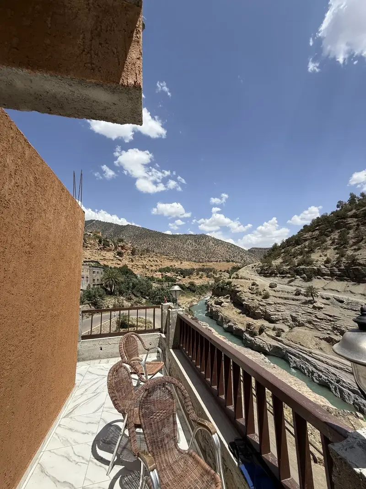

Tilouguite · Azilal · High Atlas
Complete Guide to Imsfrane
Access, transport, accommodation, activities and practical advice for preparing your visit.
Prepare your visit
Everything you need before visiting Imsfrane
This guide brings together essential information about access, local transport, places to sleep, activities, seasons and useful equipment.
Destination
Location and different names
Where is Imsfrane?
- Tilouguite Commune, Azilal Province
- High Atlas Mountains, Morocco
- Approximately 10 km from Tilouguite
- Near Oued Ahansal and Oued Melloul
Different names
- Msfrane Local
- Imsfrane Cathédrale Common name
- La Cathédrale Nickname
- Jebel Imsfrane Mountain
Road access
How to get to Imsfrane
The two main routes pass through Ouaouizeght and Tilouguite before continuing toward Imsfrane.
From Beni Mellal
Beni Mellal → Ouaouizeght → Tilouguite → Imsfrane
- Beni Mellal to Ouaouizeght: approximately 45 minutes
- Ouaouizeght to Tilouguite: approximately 30 minutes
- Tilouguite to Imsfrane: approximately 15 minutes
- Contact the local team before departure for the latest road information.
From Azilal
Azilal → Ouaouizeght → Tilouguite → Imsfrane
- Azilal to Ouaouizeght: approximately 1 hour
- Ouaouizeght to Tilouguite: approximately 30 minutes
- Tilouguite to Imsfrane: approximately 15 minutes
- Beautiful mountain and gorge landscapes along the road.
Public transport
Indicative shared-taxi prices
Price per person
| Beni Mellal → Ouaouizeght | 25 MAD |
| Ouaouizeght → Tilouguite | 20 MAD |
| Tilouguite → Imsfrane | 10 MAD |
| Estimated one-way total | 55 MAD |
Prices and availability may change. Confirm the current fare before travelling.
Accommodation
Where to sleep

Camping
Tent for 1 person
60 DH
Tent for 2 people
120 DH
Tent for 3 people
150 DH
Tent for 4 people
200 DH

Local accommodation
Rooms and houses may be available near Tilouguite and Oued Ahansal. Contact us to check availability, capacity and the final price.
View accommodation
Outdoor adventures
Activities around Imsfrane
Choose an activity according to your time, experience and the local weather conditions.


Seasons
Best time to visit
Spring
Green landscapes, waterfalls and generally good rafting conditions.
ExcellentSummer
Warm days, suitable for hiking, river visits and mountain stays.
PopularAutumn
Quiet atmosphere, pleasant temperatures and beautiful natural colours.
PeacefulWinter
Cold temperatures and changing road conditions. Preparation is essential.
Check conditions
Practical advice
What to bring and remember
What to bring
- Comfortable walking shoes
- Warm clothes for the evening
- Hat, sunscreen and drinking water
- Flashlight or headlamp
- Personal medicines and hygiene products
Important advice
- Contact the local team before departure.
- Download maps before entering remote areas.
- Do not leave waste in nature.
- Respect villages, residents and local customs.
- Check weather and river conditions before activities.
Map and directions
Find Tilouguite and Imsfrane
Use Tilouguite as the main reference point. The exact activity or accommodation meeting point is confirmed after booking.
- Tilouguite, Azilal, Morocco
- Main access through Ouaouizeght
- Call or send a message before arrival
Plan your visit
Ready to discover Imsfrane?
Send us your dates, group size and preferred activities. We will help you organize transport, accommodation and the right program.